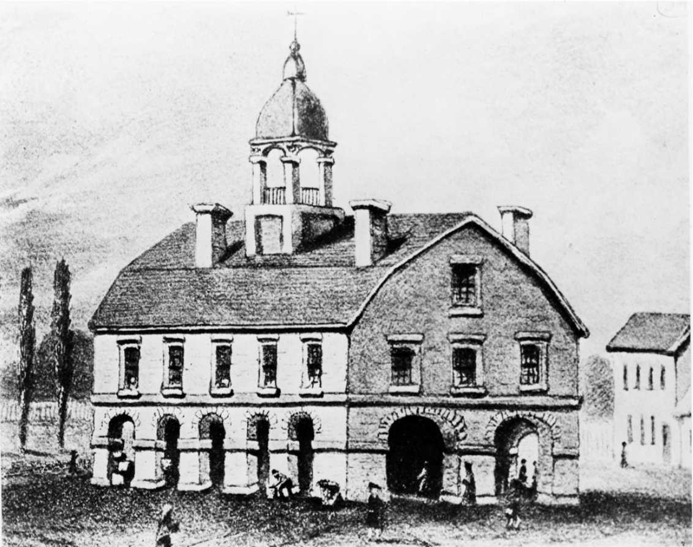
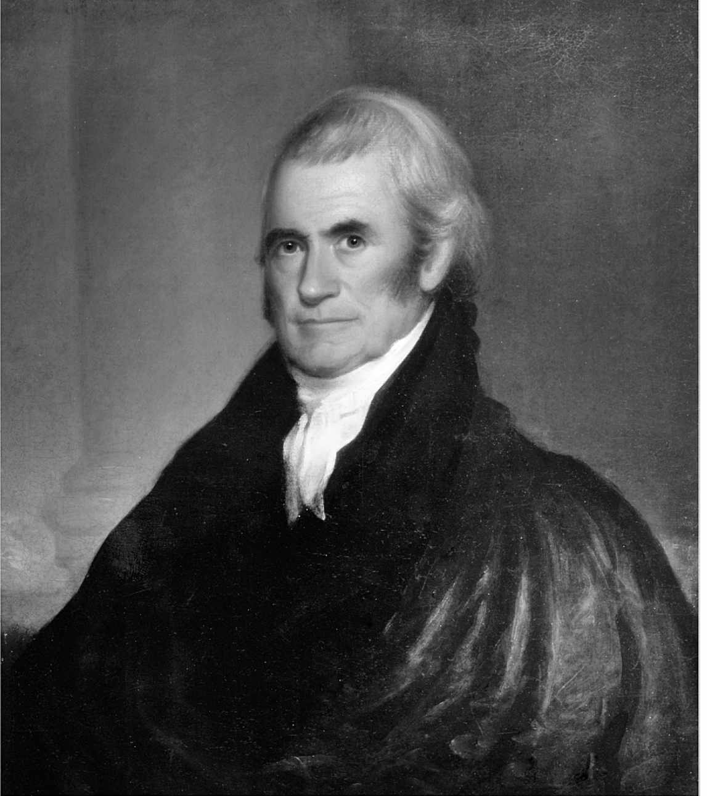

“联邦司法权，由一所最高法院和国会因时设立的下级法院行使。”
透过联邦宪法第三条首句这段文字，制宪者们宣告了一座世人尚不熟悉的机构的诞生，这是一所有权审理因联邦宪法和法律“兴讼”的案件的国家级法院。但是，1787年制宪时，宪法对最高法院权限的实际适用范围，即最高法院相对于新政府另外两个民选分支的职能，界定得远不够明确。 [1] 围绕最高法院职能的争议，也一直延续至今。如今，被提名进入最高法院的候选人，还经常会被参议院司法委员会 [2] 成员要求绝对不得以所谓“司法能动主义”的方式履行大法官职权。 [3]
我没打算把这本书写成一部以叙述历史为主的作品。我的写作目的，是让广大读者了解当今美国最高法院如何运行。要实现上述目的，并不需要对最高法院的历史进行巨细靡遗的介绍，但是，了解这个机构的起源，将有助于我们理解，今天的最高法院究竟在何等程度上成为了自身历史的主导者。最高法院成立伊始，就以界定自身权力的方式，填补了宪法第三条规定的空白。在此过程中，它也推翻了亚历山大·汉密尔顿在《联邦论》第78篇（《联邦论》共85篇，都是为呼吁公众支持对宪法的批准而作）中的预测：最高法院不能“影响枪杆子和钱袋子”，手头“既无武力，也无意志，除了判决，别无所能”，司法机关将被证明是“最不危险的权力分支”。时至今日，这一自我界定的进程仍在延续。
1781年，刚刚诞生的邦联通过的《邦联条例》，并没有创立国家层面上的司法系统和行政分支。 [4] （这一时期，全国仅有一家国家级法院，即捕获上诉法院，它的管辖范围仅限于捕获船只引发的纠纷。 [5] 邦联国会也有权设立解决各邦边界争端的特别法庭，但这样的法庭仅设立过一次。）与现在一样，那时各邦都有自己的法院系统。 [6] 这个新生国家的民众担心，一个拥有普遍管辖权的联邦法院系统，将威胁到联系本就松散的各邦主权。但是，对1787年那些齐聚费城，预备修订国家宪章的代表来说，缺乏一个国家级司法系统，正是这个权力过于分散的政府更为明显的缺陷之一。 [7]
制宪会议迅速批准了弗吉尼亚行政长官埃德蒙·伦道夫关于建立一个三权分立的中央政府的提议，三权分别归属于：立法、行政和司法。伦道夫提出的“设立一个国家级司法系统”的提议也被一致通过。但是，各邦代表们的大部分注意力和精力，都放在争论并界定宪法第一条规定的国会权力和宪法第二条规定的总统权力上。宪法第三条的核心条款不到500个字，完全是妥协的产物，这个条款留下许多悬而未决的重要问题。例如，代表们没有确定下级法院的职能，只笼统授权国会设立下级法院。就连大法官的具体数量也没有明确。宪法第三条压根儿没有提到首席大法官这一职位，宪法仅（在第一条内）授予首席大法官一项特定职责：主持参议院对总统的弹劾审判程序。制宪会议就如何遴选最高法院成员的问题，进行了详尽讨论，最终决定这些人应经总统提名、参议院确认，方能任职。制宪代表们试图通过联邦法官“若品行端正，应终身任职”的规定，来保障司法独立。
可是，司法独立的目的是什么呢？代表们注意到，部分邦的最高法院在行使着司法审查权，宣布那些在法官看来违反邦宪法的立法无效。马萨诸塞最高法院根据该院对1780年马萨诸塞邦宪法的解释，通过行使司法审查权，宣布奴隶制在境内违宪。制宪之前，弗吉尼亚、北卡罗来纳、新泽西、纽约、罗得岛等地的法院，都行使过司法审查权，有时还引起过广泛争议。
尽管制宪代表们似乎认为联邦法院未来可以对联邦法和州法适用司法审查权之类的权力，但宪法第三条对这一问题，仍然语焉不详。它只是泛泛规定，联邦法院司法权的适用范围“延伸到由宪法、联邦法律、条约引发的一切普通法和衡平法案件”。随后，它明确列出了联邦法院有权审理的案件类型：两州或多州之间的案件；一州与另一州公民之间的案件；不同州公民之间的案件；“联邦为一方当事人的讼争”；所有涉及海事裁判权及海上裁判权的案件；涉及大使、公使和领事的所有案件；一州或其公民与外国政府、公民或其属民之间的案件。
针对最高法院，宪法第三条专门区分了“初审”管辖权和“上诉”管辖权。也就是说，对于州或外国外交官为一方当事人的案件，最高法院可以作为一审法院直接受理；其他所有案件则由下级法院一审，最高法院负责上诉审。由于下级法院一开始并没有设立，这样的区分标准，会令阅读宪法“司法条款”的人们非常费解。 [8] 这项区分的极端重要性，很快将在现实中得到印证。
宪法刚一通过，国会便迅速根据宪法第三条确定的框架，着手设立联邦法院系统。1789年《司法法》，也就是后人常说的“第一部《司法法》”，设置了两个审级的下级法院：13个地区法院，按州界划分管辖权，各院都配备专门的地区法官；3个巡回法院，分别是东部巡回法院、中部巡回法院和南部巡回法院。《司法法》没有为巡回法院提供专职法官岗位。每个巡回法院的案件都由两位最高法院大法官、一位地区法院法官审理，每两个开庭期轮换一次。这一制度要求大法官们“骑乘巡回”，在当时十分简陋的州际交通条件下，这无疑是一项繁重的负担，早期的大法官们对此深为憎恶。威廉·库欣大法官的太太汉娜·库欣抱怨说，她和丈夫简直成了“出差机器”。 [9] 尽管大法官们牢骚不断，巡回制度还是持续了一个多世纪，中间只经历过少许修正，直到国会在1891年《埃瓦茨法》中同意设置配备专职法官的巡回法院体系（也就是今天我们熟知的13个联邦巡回上诉法院）。
首届最高法院由一位首席大法官和五位联席大法官组成。 [10] 首席大法官约翰·杰伊出身于名门望族，本人亦是纽约著名律师，还是《联邦论》的执笔者之一。新成立的最高法院立刻开始界定自身权限。联席大法官当中，有三位曾是制宪会议的代表，他们分别是：来自南卡罗来纳的约翰·拉特利奇、来自宾夕法尼亚的詹姆斯·威尔逊，以及来自弗吉尼亚的小约翰·布莱尔。他们都对最高法院在宪法确立的“三权分立”体制中的地位有明确认识。（乔治·华盛顿总统后来又任命了两位参与了制宪会议的代表进入最高法院，分别是来自新泽西的威廉·帕特森和来自康涅狄格的奥利弗·埃尔斯沃思。）
早期的第一个转折点发生在1793年，国务卿托马斯·杰弗逊代表华盛顿总统致函最高法院，希望大法官们帮忙解释1778年的《美法条约》，借此解决条约引发的一系列问题。公函列出了29个具体问题。当时，各州法官经常为总统出具所谓“咨询意见”，某些州至今仍这么做。但是，杰伊首席大法官和其他联席大法官认为，杰弗逊的这一请求超出了联邦法院的职权范围。在给总统的回函中，最高法院答复说：“宪法为政府三大部门设定的分界线——要求它们在某些方面互相制约监督——我们只是终审法院法官——上述界限可以作为有力依据，阻止我们逾越司法权限、作出答疑解惑的不当之举。”
上述拒绝充当顾问角色的早期做法，确立起一项恒定法则：根据宪法授权，联邦法院只处理因对立当事人之间的争议引发的问题。不过，这项法则说来容易，用起来却很麻烦，最高法院在之后的两个世纪，一直在对它进行详细阐释。直到今天，联邦法院的“宪法第三条管辖权”的范围仍然存在很大争议。最重要的争议很简单：联邦法院的管辖权问题本来深植于我国的宪政源头，最高法院却自己给出了答案。
1790年2月，最高法院大法官们在纽约市首度聚齐，当时纽约尚是我国首都。最高法院第一次会议在位于下曼哈顿地区的商业交易所（又称“皇家交易所”）大楼内举行，那里也是最高法院1935年在国会山上拥有属于自己的办公场所之前，使用过的几个办公地点之一。
在纽约待了一年后，最高法院又迁往费城，起初位于州议会大厦，随后搬入新建的市政厅。在那里，大法官们与当地市政法院共用一个办公地点。九年后，也即1800年，最高法院随中央政府其他部门一并从费城迁至新都华盛顿特区。之后135年间，最高法院都在国会大厦内办公。1800年，总统和国会都已搬进自己的办公场所，最高法院名下却没有任何不动产，直到将近20世纪中叶才找到安身之处。这一点充分说明，以最高法院为首的司法分支，一开始并没有与另外两个分支平起平坐。最终还是得靠最高法院赋予自己对宪法的主导权，才争得地位上的对等。
起初，最高法院想要成为显要部门的前景似乎遥不可及。在最初两个开庭期，1790年2月和8月，这个机构几乎无事可做。第一个开庭期之后一年，最高法院终于受理了第一起案件，但是在正式开庭之前，双方当事人就和解了。六个月后，1791年8月，最高法院受理了第二起案件，一起因商事纠纷引发的上诉。大法官们听取辩论后，宣布因上诉程序违法，不会就本案作出判决。直到1792年，最高法院才正式开始发布判决意见。

图1 老商业交易所大楼。又称皇家交易所，是最高法院第一个办公场所。1790年2月2日，最高法院在这座位于下曼哈顿地区的大楼首度召集
早年间，由于对联邦重罪拥有初审管辖权，巡回法院的案件数量与日俱增，大法官们作为巡回法院法官，审判任务极端繁重，疲于奔命。巡回期间，大法官们逐步总结出一些关于联邦法律与司法管辖权的重要法则。较典型的例子是1792年的“海本案”。当时，新实施的《残疾抚恤金法》指派巡回法院行使抚恤金委员会的职能，处理独立战争伤残老兵的抚恤金申请事宜。身兼巡回法官职责的大法官们，拒绝行使这一新被赋予的司法管辖权。这里存在的问题是，法官关于老兵是否应获得抚恤金的决定，都要接受战争部长审查。大法官们认为，行政分支这种多此一举的审查行为，将使法院之前的决定沦为一种非司法行为。负责三家巡回法院审判事务的大法官们分别致信华盛顿总统，阐述了他们不能接受指派的原因。“这样的修正与操控［原文如此］在我们看来与宪法赋予法院的司法权的独立性完全相悖。”负责中部巡回法院审判事务的詹姆斯·威尔逊和约翰·布莱尔大法官在信中解释道。总检察长 [11] 上诉到最高法院，但是，大法官们听审后，并没有作出裁判，因为在此期间，国会已修订了这一激起众怒的法律条款。那么，“海本案”算得上最高法院首次判定国会立法违宪的案件吗？不算，因为从形式上讲，法院并没有发布正式判决。不过，这次争议受到广泛关注，公众也据此深信，大法官们清楚了解宪法划定的司法管辖权边界，并将成为这一边界的忠诚守护者。
第二年，最高法院判处了一起被普遍认为是建院之初极为重要的案件。1793年，这起名为“奇泽姆诉佐治亚州案”的案件的判决迅速激起强烈反弹，直接导致“权利法案”包含的十条宪法修正案通过之后，又一条新的修正案被批准。 [12] 此案起因是，南卡罗来纳一名商人为追讨佐治亚州在独立战争中欠下的债务，起诉了后者。原告根据宪法第三条关于最高法院管辖一州与其他州的公民之间的讼争的规定，直接向最高法院提起诉讼。最高法院驳回了佐治亚州关于自己是主权州，可以自动豁免于未经其同意的诉讼的说法。由于佐治亚州拒绝出庭应诉，最高法院进行了缺席裁判。
按照传统，位于多数方的五位大法官（另有一位大法官持异议意见）分别发布了单独意见。这些意见共同组成一份带有强烈国家主义色彩的判决。“根据合众国立国宗旨，佐治亚州不是一个主权州。”威尔逊大法官写道。不出所料的是，各州都对事态的发展感到惊讶，两天之后，就有人提议专门制定一条宪法修正案，以推翻最高法院的判决。1798年，宪法第十一修正案获批通过，宣布联邦法院的司法管辖权“不得被解释为可延伸到”由某州公民针对另一州提起的诉讼。尽管修正案白纸黑字似乎说得很明白，但是，州豁免于诉讼的范围问题远没有得到解决，相关争议直到今天仍然存在。 [13]
1795年，曾竞选纽约州州长失利的首席大法官杰伊，在最高法院任上当选为州长后，辞职赴任。纽约一家报纸盛赞此举，将首席大法官当选州长称为“升迁”。华盛顿提名来自南卡罗来纳的约翰·拉特利奇接任首席，拉特利奇早先曾被任命为联席大法官，但还未正式开始工作，就辞职转任南卡罗来纳州最高法院首席大法官。 [14] 这一次，拉特利奇欣然接受了总统的“休会任命”，可是，参议院没有批准他出任大法官。 [15] 不过，拉特利奇的确于1795年8月12日至12月15日期间在任，所以，他仍被视为美国第二任首席大法官。
华盛顿随后提名在任联席大法官威廉·库欣出任首席，参议院很快批准。但库欣却以健康状况不佳为由拒绝了任命。总统又提名来自康涅狄格的奥利弗·埃尔斯沃思，这次终于成功了。第三位首席大法官于1796年3月履任，1800年12月15日因健康原因请辞。约翰·亚当斯总统邀请约翰·杰伊回原岗位工作。但此时已经担任两届纽约州州长的杰伊却拒绝履职，说他“完全确信”联邦司法系统存在根本“缺陷”，也无法“获得公众对本国司法最后一道救济途径所应有的信任和尊重”。
正是在这样的不利背景下，约翰·亚当斯提名自己的国务卿约翰·马歇尔出任第四任首席大法官。 [16] 马歇尔是弗吉尼亚人，曾在独立战争中浴血奋战，时年45岁，至今仍保持着最年轻的首席大法官的履职记录。（第二年轻的是小约翰·罗伯茨，2005年履任时才50岁。）马歇尔是全国知名的人物，在推动弗吉尼亚批准宪法过程中发挥了重大作用，还曾赴法国执行重要外交使命。马歇尔的父母有15个子女，他排行老大，这或许可以解释他与生俱来的领导才能。马歇尔时常被人误以为是美国第一位首席大法官。这个错误完全可以理解。1801年2月履任后，他在首席任上一干就是34年，直到1835年7月6日去世。他逝世时，最高法院已完成重大转型，不再是跟在另外两个政府分支后面亦步亦趋的异父姊妹。马歇尔于1801年3月4日主持了托马斯·杰弗逊的总统宣誓就职仪式，然而，让杰弗逊失望的是，马歇尔领导下的最高法院秉持强烈的国家主义理念，并积极适用宪法，利用自己在宪法解释上的权威地位来推行这一理念。 [17]
1803年2月24日宣判的“马伯里诉麦迪逊案”，是马歇尔法院最广为人知的案件，也是最高法院历史上最著名的案件之一。当时，马歇尔才履任不久。这起案件之所以发生，要归因于1800年大选后政权由亚当斯领导的联邦党人之手向杰弗逊领导的共和党人手中过渡时的紧张关系和混乱状态。联邦党人居多的法院系统，本来就被在大选中获胜的共和党人视为“眼中钉”，更何况由联邦党人主导的即将换届的国会，匆匆批准设立了42个新司法职位，供亚当斯总统在离职前数周内任命新人补缺。

图2 约翰·马歇尔首席大法官。伦布兰特·皮尔绘制的这位第四任首席大法官的画像，至今仍在最高法院内多处悬挂
马里兰州一个名叫威廉·马伯里的征税官得到一份“午夜”任命，拟赴哥伦比亚特区任治安法官。 [18] 参议院批准了对马伯里等数十人的任命。但是，要想正式履任，这些新被任命的法官还需得到一份委任状。然而，亚当斯行政分支卸任时，马伯里并没有拿到这纸公文。杰弗逊总统的国务卿詹姆斯·麦迪逊拒绝发出委任状。在联邦党人政治圈内十分活跃的马伯里直接向最高法院提起诉讼。他想申请到一份执行职务令状（writ of mandamus），这是一种命令对方交出委任状的司法指令。这似乎是一条唾手可得的救济途径，因为国会在1789年《司法法》中明确规定，公民可以针对某位联邦官员，直接向最高法院提出执行职务令状申请。
作为法律问题，此案结果似乎一目了然，但是，这起案件又高度政治化，使最高法院的权威受到挑战。麦迪逊极有可能无视法院将委任状交给马伯里的指令。最高法院应如何既维护法治尊严，又不与行政分支发生激烈对抗，避免从此长期处于弱势地位呢？
马歇尔的解决方式是，主张最高法院拥有这项权力，却没有直接行使。判决是以最高法院一致意见的形式发布的。最高法院统一发声，是马歇尔的新创举，判决不再由一系列单独的协同意见组成。最高法院判定，马伯里应当得到自己的委任状，但最高法院不能勒令行政分支发出。因为宪法第三条赋予最高法院的“初审”管辖权，并不包括发布执行职务令。法院认为，国会在《司法法》第十三节中规定最高法院可以直接受理像马伯里申请执行职务令这类初审案件，这是违反宪法的，最高法院不能发布这类执行令。判决使最高法院得以在政治动荡时期远离纷争；因为没有发布执行令，杰弗逊行政分支也无从抱怨。当然，判决的重要意义，在于最高法院主张自己有权审查国会立法是否违宪。马歇尔宣布：“决定法律是什么，是司法部门当仁不让的职权与责任。”此话在最高法院的历史上被不断援引，影响一直持续至今。最高法院貌似谦恭地放弃了行动的权威（authority），却为自己争得了重大的权力（power）。
这一权力的全部意义并没有立刻显现。事实上，“马伯里案”宣判后的第六天，最高法院就在首席大法官马歇尔缺席的情况下，回避了一场潜在的宪政对抗。在1803年的“斯图尔特诉莱尔德案”中，大法官们以5票对0票，维持了国会废除1801年《司法法》的决定。 [19] 一些历史学家认为，上述举措说明，最高法院不打算冒险试探，把自己刚刚自我授予的权力用得太满。最高法院第二次宣布国会某部立法违宪，已是半个多世纪之后。1857年的“德雷德·斯科特诉桑福德案”判决宣布《密苏里妥协案》无效，并判定国会无权废除准州实行的奴隶制。 [20] 这个臭名昭著的判决，将国家往内战之路上推进了一大步，或许并非司法审查的最佳宣示。 [21] 但是，从此以后，最高法院不再像最初那么缄默克制。它先后150多次宣布国会立法违宪。
那么，当代最高法院如何行使它掌握的重大权力？案件如何来到最高法院？大法官们又如何选案，如何判决？大法官都是些什么人？他们是如何被选中的？这是本书余下部分要介绍的内容。